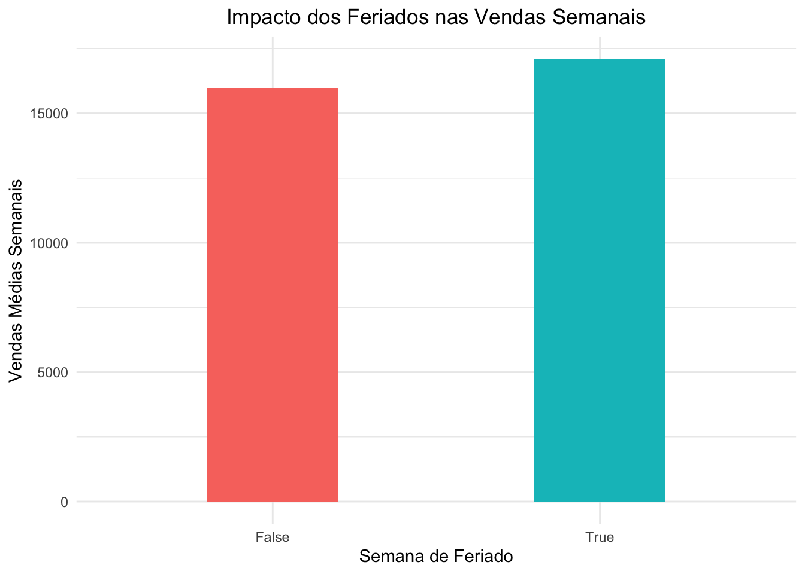
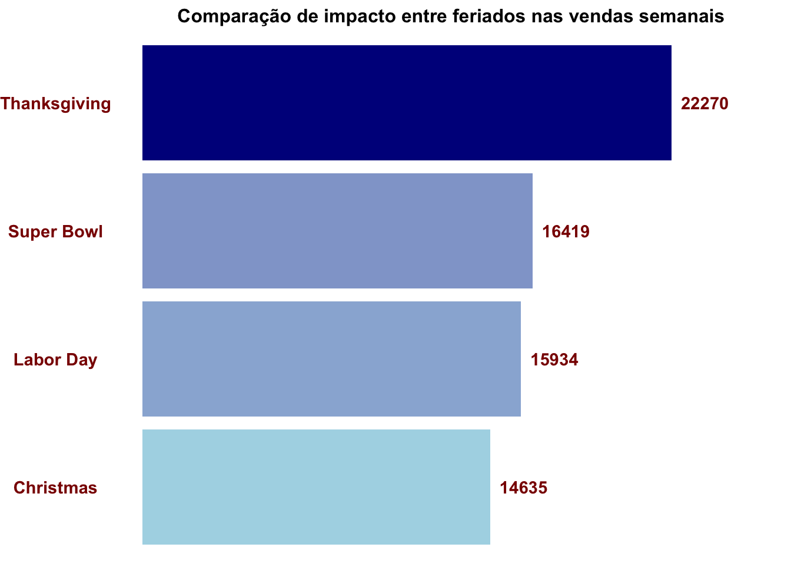
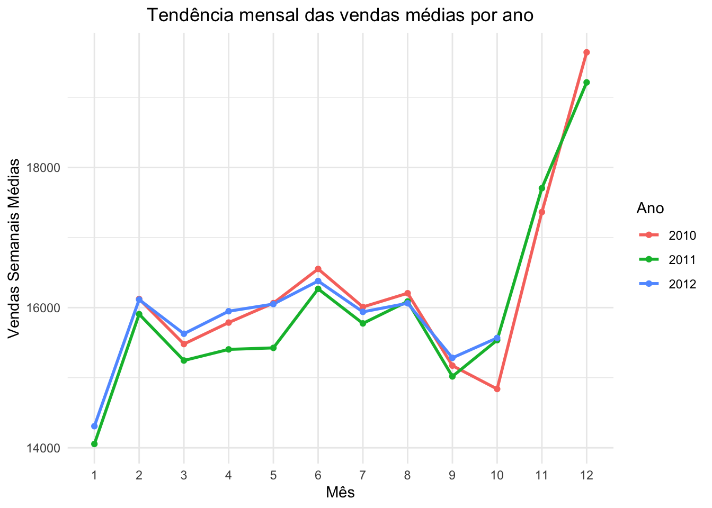
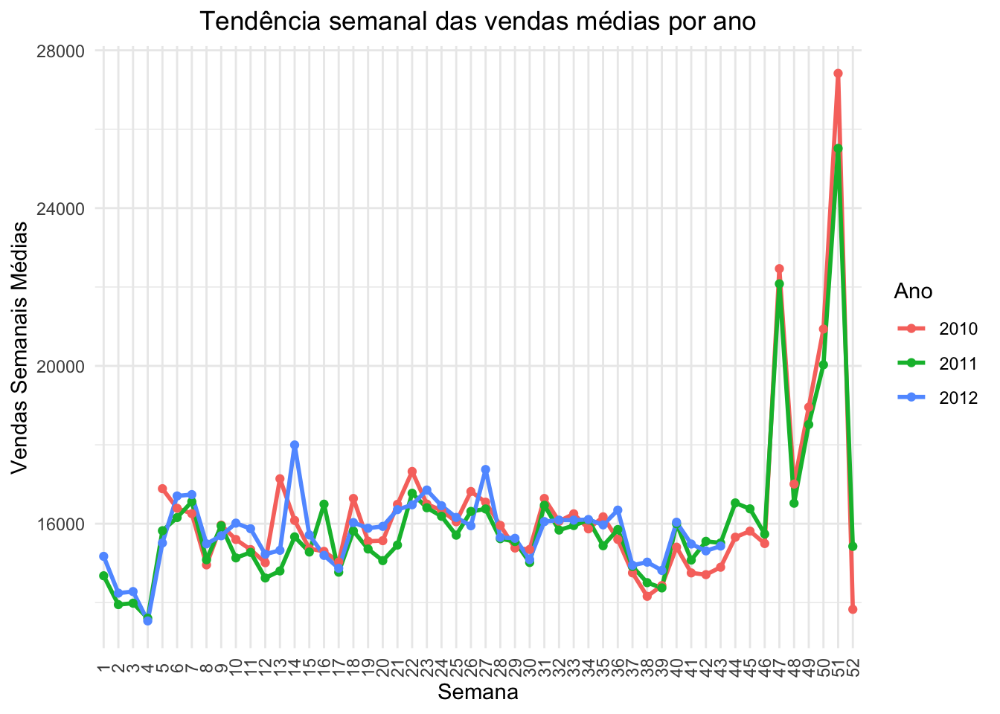
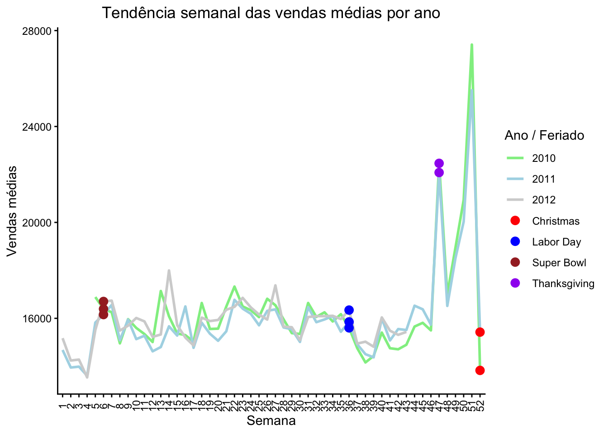
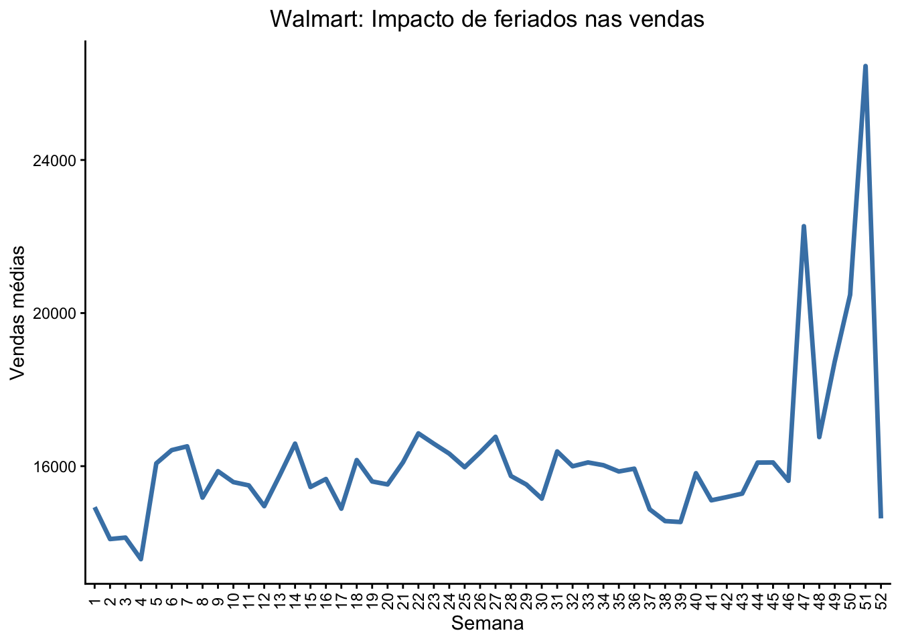

Exploratória: usada durante a análise, com gráficos que ajudam o analista a descobrir padrões, levantar hipóteses e testar relações.
Explanatória: voltada para a comunicação final, destacando apenas os pontos mais relevantes e construindo uma mensagem clara. Nesse abordagem, surge uma pergunta importante: o que eu quero que meu público faça com isso? Apresentar dados não basta; é preciso articular de forma clara o motivo e a ação esperada. Essa perspectiva pode parecer desconfortável, pois exige que o comunicador assuma uma posição ativa, conduzindo seu público a uma decisão ou reflexão. No entanto, é justamente essa articulação que transforma uma apresentação em algo memorável. Mesmo quando não se trata de recomendar diretamente uma ação, sugerir próximos passos mantém a conversa viva, ativa e engajada. A ação, nesse contexto, é o motor da comunicação.
Isso exige sair da zona de conforto. Em vez de se limitar a exibir números, o comunicador precisa traduzir dados em movimento. Uma apresentação de vendas, por exemplo, não deve terminar apenas com o gráfico de resultados, mas com um chamado: apoiar estratégias que sustentem o crescimento, ou investigar as causas de uma queda específica. É nessa transição do “olhar” para o “agir” que os dados ganham poder narrativo. A cada mensagem transmitida, o comunicador deve se perguntar: o que eu quero que o público faça a partir daqui?
O Walmart é uma multinacional estadunidense de lojas de departamento. Ela forneceu dados de 45 lojas, contendo informações sobre a loja e as vendas mensais. Esses dados incluem quatro semanas de feriado:
Suponha, que você é um analista de dados do Walmart que investiga tendências nos dados e direciona as ações do time de marketing/vendas e operacional.
'data.frame': 420212 obs. of 15 variables:
$ Store : int 1 1 1 1 1 1 1 1 1 1 ...
$ Dept : int 1 2 3 4 5 6 7 8 9 10 ...
$ Date : chr "2010-02-05" "2010-02-05" "2010-02-05" "2010-02-05" ...
$ Weekly_Sales: num 24924 50605 13740 39954 32229 ...
$ IsHoliday : chr "False" "False" "False" "False" ...
$ Temperature : num 42.3 42.3 42.3 42.3 42.3 ...
$ Fuel_Price : num 2.57 2.57 2.57 2.57 2.57 ...
$ Type : chr "A" "A" "A" "A" ...
$ Super_Bowl : chr "False" "False" "False" "False" ...
$ Labor_Day : chr "False" "False" "False" "False" ...
$ Thanksgiving: chr "False" "False" "False" "False" ...
$ Christmas : chr "False" "False" "False" "False" ...
$ week : int 5 5 5 5 5 5 5 5 5 5 ...
$ month : int 2 2 2 2 2 2 2 2 2 2 ...
$ year : int 2010 2010 2010 2010 2010 2010 2010 2010 2010 2010 ...
summary(dados)
Store Dept Date Weekly_Sales
Min. : 1.0 Min. : 1.00 Length:420212 Min. : 0.01
1st Qu.:11.0 1st Qu.:18.00 Class :character 1st Qu.: 2120.13
Median :22.0 Median :37.00 Mode :character Median : 7661.70
Mean :22.2 Mean :44.24 Mean : 16033.11
3rd Qu.:33.0 3rd Qu.:74.00 3rd Qu.: 20271.26
Max. :45.0 Max. :99.00 Max. :693099.36
IsHoliday Temperature Fuel_Price Type
Length:420212 Min. : -2.06 Min. :2.472 Length:420212
Class :character 1st Qu.: 46.68 1st Qu.:2.933 Class :character
Mode :character Median : 62.09 Median :3.452 Mode :character
Mean : 60.09 Mean :3.361
3rd Qu.: 74.28 3rd Qu.:3.738
Max. :100.14 Max. :4.468
Super_Bowl Labor_Day Thanksgiving Christmas
Length:420212 Length:420212 Length:420212 Length:420212
Class :character Class :character Class :character Class :character
Mode :character Mode :character Mode :character Mode :character
week month year
Min. : 1.00 Min. : 1.00 Min. :2010
1st Qu.:14.00 1st Qu.: 4.00 1st Qu.:2010
Median :26.00 Median : 6.00 Median :2011
Mean :25.83 Mean : 6.45 Mean :2011
3rd Qu.:38.00 3rd Qu.: 9.00 3rd Qu.:2012
Max. :52.00 Max. :12.00 Max. :2012
dados <- dados %>%mutate(Date =as_date(Date),across(c(Type, IsHoliday, Christmas, Thanksgiving, Labor_Day, Super_Bowl, week, month, year), as.factor))summary(dados)
Store Dept Date Weekly_Sales
Min. : 1.0 Min. : 1.00 Min. :2010-02-05 Min. : 0.01
1st Qu.:11.0 1st Qu.:18.00 1st Qu.:2010-10-08 1st Qu.: 2120.13
Median :22.0 Median :37.00 Median :2011-06-17 Median : 7661.70
Mean :22.2 Mean :44.24 Mean :2011-06-18 Mean : 16033.11
3rd Qu.:33.0 3rd Qu.:74.00 3rd Qu.:2012-02-24 3rd Qu.: 20271.26
Max. :45.0 Max. :99.00 Max. :2012-10-26 Max. :693099.36
IsHoliday Temperature Fuel_Price Type Super_Bowl
False:390652 Min. : -2.06 Min. :2.472 A:214961 False:411339
True : 29560 1st Qu.: 46.68 1st Qu.:2.933 B:162787 True : 8873
Median : 62.09 Median :3.452 C: 42464
Mean : 60.09 Mean :3.361
3rd Qu.: 74.28 3rd Qu.:3.738
Max. :100.14 Max. :4.468
Labor_Day Thanksgiving Christmas week month
False:411380 False:414266 False:414303 7 : 8911 4 : 41211
True : 8832 True : 5946 True : 5909 6 : 8873 7 : 40867
9 : 8868 3 : 38332
10 : 8858 10 : 38274
15 : 8850 9 : 38210
14 : 8847 8 : 38048
(Other):367005 (Other):185270
year
2010:140264
2011:152940
2012:127008
Exploratória
Os feriados causam impacto nas vendas?
dados %>%group_by(IsHoliday) %>%summarise(mean_sales =mean(Weekly_Sales)) %>%ggplot(aes(x = IsHoliday, y = mean_sales, fill = IsHoliday)) +geom_col(width =0.4) +labs(title ="Impacto dos Feriados nas Vendas Semanais",x ="Semana de Feriado",y ="Vendas Médias Semanais") +theme_minimal() +theme(plot.title =element_text(hjust =0.5), legend.position ="none")

Qual feriado proporciona o maior aumento nas vendas justamente na semana em que ocorre?
feriados_long <- dados %>%pivot_longer(cols =c(Super_Bowl, Labor_Day, Thanksgiving, Christmas),names_to ="Feriado",values_to ="is_holiday" ) %>%filter(is_holiday =="True") %>%group_by(Feriado) %>%summarise(mean_sales =mean(Weekly_Sales)) %>%arrange(desc(mean_sales))ggplot(feriados_long, aes(x = Feriado, y = mean_sales, fill = mean_sales)) +geom_col() +geom_text(aes(label =round(mean_sales, 0)), hjust =-0.2, colour ="darkred", fontface ="bold") +coord_flip() +ylim(0, 26000) +scale_x_discrete(labels =c("Super_Bowl"="Super Bowl","Labor_Day"="Labor Day")) +scale_fill_gradient(low ="lightblue", high ="darkblue") +labs(title ="Comparação de impacto entre feriados nas vendas semanais") +theme_void() +theme(plot.title =element_text(hjust =0.5, face ="bold", size =12),legend.position ="none",axis.title.y =element_blank(),axis.title.x =element_blank(),axis.text.y =element_text(colour ="darkred", face ="bold"))

Qual é a tendência de vendas ao longo do ano por mês?
dados %>%group_by(year, month) %>%summarise(mean_sales =mean(Weekly_Sales)) %>%ggplot(aes(x = month, y = mean_sales, group = year, color =as.factor(year))) +geom_line(size =1) +geom_point() +labs(title ="Tendência mensal das vendas médias por ano", x ="Mês", y ="Vendas Semanais Médias", color ="Ano") +theme_minimal() +theme(plot.title =element_text(hjust =0.5))

Qual é a tendência de vendas ao longo do ano por semana?
dados %>%group_by(year, week) %>%summarise(mean_sales =mean(Weekly_Sales)) %>%ggplot(aes(x = week, y = mean_sales, group = year, color =as.factor(year))) +geom_line(size =1) +geom_point() +labs(title ="Tendência semanal das vendas médias por ano",x ="Semana",y ="Vendas Semanais Médias",color ="Ano") +theme_minimal() +theme(plot.title =element_text(hjust =0.5),axis.text.x =element_text(angle =90, vjust =0.5))

Destacando as semanas de feriado
cores_ano <-c("2010"="lightgreen","2011"="lightblue","2012"="lightgrey")cores_feriado <-c("Super Bowl"="brown","Labor Day"="blue","Thanksgiving"="purple","Christmas"="red")dados_proc <- dados %>%mutate(holiday_name =case_when( Super_Bowl =="True"~"Super Bowl", Labor_Day =="True"~"Labor Day", Thanksgiving =="True"~"Thanksgiving", Christmas =="True"~"Christmas" )) %>%group_by(year, week) %>%summarise(mean_sales =mean(Weekly_Sales),holiday_name =first(holiday_name),.groups ="drop" )ggplot(dados_proc) +geom_line(aes(x = week, y = mean_sales, group = year, color =as.factor(year)), size =1) +geom_point(data = dados_proc %>%filter(!is.na(holiday_name)),aes(x = week, y = mean_sales, color = holiday_name), size =3) +scale_color_manual(values =c(cores_ano, cores_feriado)) +labs(title ="Tendência semanal das vendas médias por ano",x ="Semana",y ="Vendas médias",color ="Ano / Feriado" ) +theme_classic() +theme(plot.title =element_text(hjust =0.5),axis.text.x =element_text(angle =90, vjust =0.5))

Conclusões:
Consistência anual das tendências;
De modo geral, feriados aumentam as vendas médias semanais;
Tendência anual e sazonalidade clara em dezembro;
Embora o mês de dezembro apresente os maiores volumes de vendas devido à proximidade do Natal, o pico de vendas ocorre predominantemente na semana anterior ao feriado de Natal, e não na semana do próprio feriado.
Em contrapartida, o comportamento das vendas no feriado de Thanksgiving é distinto: as vendas atingem seu auge exatamente na semana do feriado.
Para os feriados Labor Day e Super Bowl, o impacto sobre as vendas semanais é bem menos expressivo, sem gerar picos significativos.
Conclusão final:
O efeito do Natal é antecipatório, enquanto o Thanksgiving impulsiona as vendas no momento do próprio feriado. Já os demais feriados não se destacam como motores do volume de vendas semanal.
Explanatória
# Média das vendas por semana considerando todos os anosdados_medio <- dados %>%mutate(holiday_name =case_when(Christmas =="True"~"Christmas", Thanksgiving =="True"~"Thanksgiving")) %>%group_by(week) %>%summarise(mean_sales =mean(Weekly_Sales),holiday_name =first(holiday_name)) %>%ungroup()# Gráfico explanatório(f <-ggplot(dados_medio, aes(x = week, y = mean_sales, group =1)) +geom_line(color ="steelblue", size =1.2) +labs(title ="Walmart: Impacto de feriados nas vendas",x ="Semana",y ="Vendas médias",color ="Feriado") +theme_classic() +theme(plot.title =element_text(hjust =0.5),axis.text.x =element_text(angle =90, vjust =0.5)))

# Selecionar apenas semanas com feriadosemanas_feriado <- dados_medio %>%filter(!is.na(holiday_name))semanas_feriado